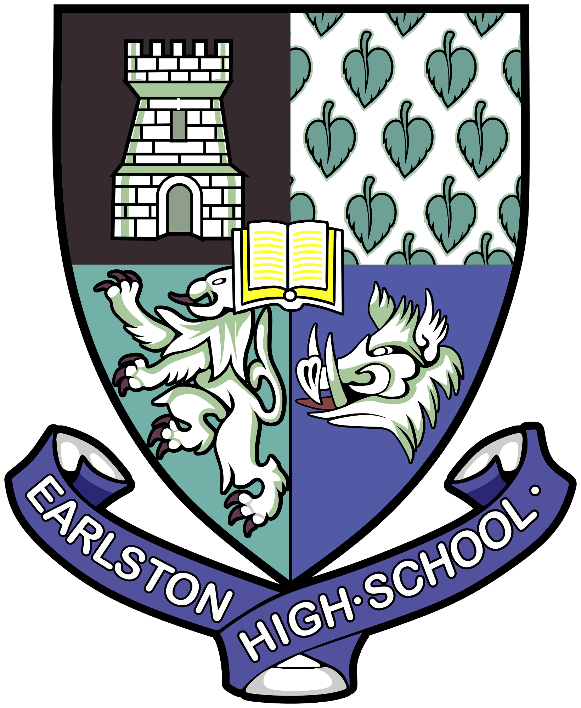
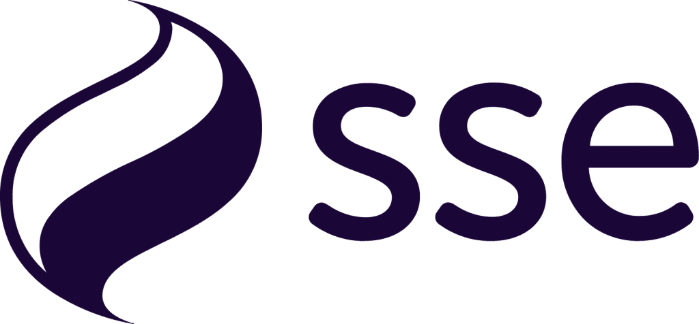
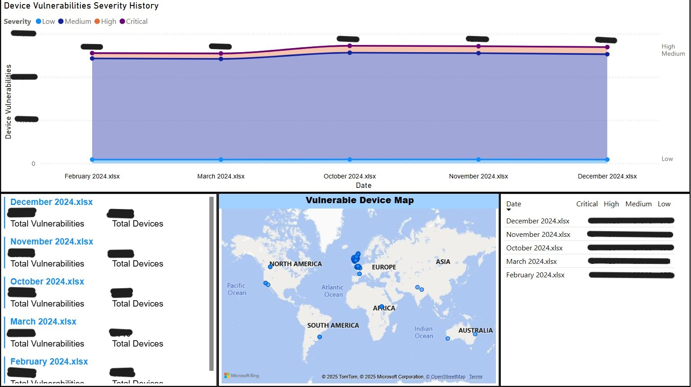

Portfolio
Summary
I have been actively engaged in various technology-focused passion projects and academic initiatives. My professional journey is currently centered around my role at SSE, where I tackle complex and dynamic projects that challenge my abilities and allow me to apply and expand my skill set effectively.
Skills
- Customer Service: Proven ability to handle customer queries and resolve issues efficiently, ensuring customer satisfaction during my tenure at McDonald's.
- Time Management: Successfully balanced academic studies with part-time work, meeting deadlines and achieving high performance in both areas.
- Communication: Effectively collaborating with team members and presenting ideas clearly in projects and professional settings.
- Teamwork: Worked cohesively in diverse teams, both in academic group projects and in fast-paced work environments like McDonald's, to achieve common goals.
- Fast Learner: Quickly adapted to new tools, technologies, and processes, such as learning PowerBI and HTML5, to enhance my technical and analytical skills.
Education
University Of Dundee | September 2024 - Present
- Bachelor of Science (B.Sc.) in IT Management for Business
Earlston High School | August 2018 - June 2024

Advanced Higher
Higher
- History
- Graphic Communication
- English
- Physics
- Mathematics
- Business Management
National 5
- Chemistry
- Physics
- Mathematics
- English
- Graphic Communication
- Music
Work Experience
SSE | September 2024 - Present

- Operational Technology Security Apprentice
McDonald's | September 2022 - August 2024

Projects
Project 1 - HTML Portfolio Website
This portfolio website is a project I am undertaking to enhance my HTML and web development skills. Through it, I aim to display my talent and create a professional representation of my work.
The project focuses on the use of HTML semantic naming conventions to ensure the site is well-structured, accessible, and optimised for mutiple displays. (mobile etc...) The design focuses on being visually appealing and user-friendly.
For more details, you can view the GitHub repository where its updates/history is documented.

Project 2 - PowerBI Dashboard
During my security placement at SSE, I undertook a project utilizing PowerQueries to process data from a monthly Excel file/report. This project involved loading, filtering, and digesting data, which is then visually represented through graphs.
These graphs are automatically updated on a live dashboard on a SharePoint site using an auto-refresh queue I have setup.
This live dashboard provides users with an at-a-glance view of security and vulnerability concerns. Users can filter or drill down further into the data for even more insights. (Note: Information on graphs has been blurred/censored for obvious reasons.)

Project 3
Short description of Project 3...